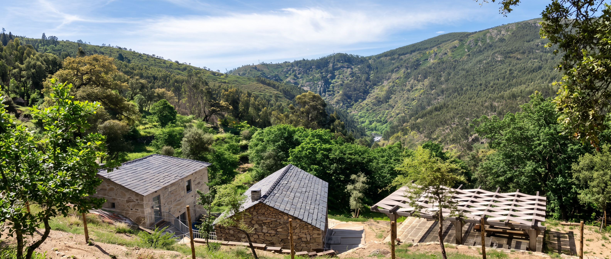
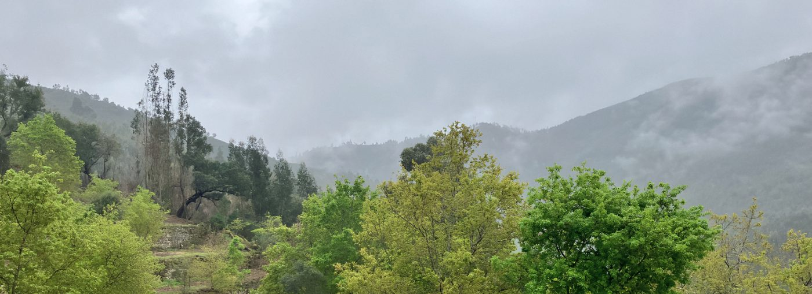
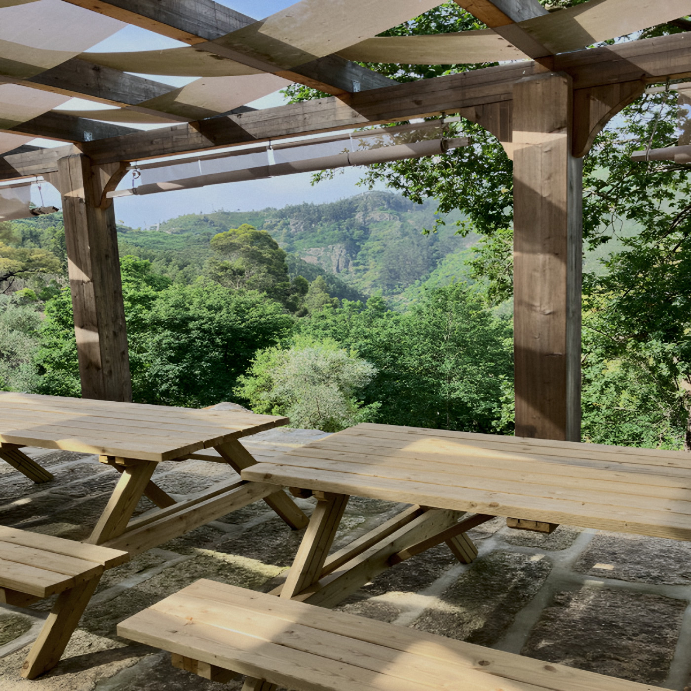

Paiva Valley
Lourido · Alvarenga · Arouca
A casa
Casas de pedra e lousa, numa encosta do vale do Paiva.
Alojamento local isolado, inserido no meio da natureza com vista para o rio Paiva. Telmo e Sofia, anfitriões
Quartos
Três, cada um com a sua casa de banho.
QuartoPaiva
QuartoVau
QuartoArainho
Espaços comuns
A sala e a cozinha são de todos os hóspedes.
Comodidades
O essencial para uns dias no vale.
- Casa de banho privativaEm cada um dos três quartos
- Wi-Fi gratuitoEm toda a casa
- Ar condicionado e TVNos quartos Paiva e Vau
- Cozinha partilhadaPara os hóspedes cozinharem
- Sala comumO Segredo, de paredes de pedra
- Terreiro NobreA pérgola com mesas, sobre o vale
- O deckSofás ao sol, virados ao vale
- JardimCom área de piquenique
- Estacionamento gratuitoPrivado, no local
- Casa seguraAlarme e videovigilância no exterior
- Casa sem fumoEm todos os espaços
Galeria da casa

A região
O VALE DO PAIVA
A casa fica numa encosta sobre o rio Paiva. Perto ficam uma praia de rio, a Ponte 516 Arouca e os Passadiços do Paiva.
-
a 5 minutos
Praia Fluvial do Vau
Uma praia no rio Paiva, entre penedos e arvoredo.
-
3,8 km
Ponte 516 Arouca
Uma ponte suspensa para peões, com 516 metros, por cima do rio Paiva.
-
8,9 km · entrada do Areinho
Passadiços do Paiva
8,7 km de passadiços de madeira ao longo do rio, entre o Areinho e Espiunca.
Distâncias indicadas pelo Booking; a da praia é a que a casa indica.
O vale, nas fotografias da casa ·
Onde fica
Numa encosta sobre o rio
Para chegar bem
O último troço é um caminho estreito e inclinado, e o GPS nem sempre acerta na entrada. Chegue de dia e peça as indicações ao Telmo ou à Sofia antes de sair.

Reservar
Venha ouvir o silêncio
3 quartos · até 6 hóspedes · Lourido, Alvarenga
Antes de chegar
- Entrada
- 15:00 – 20:00
- Saída
- até às 11:00
- Crianças
- bem-vindas, sem berços
- Animais
- não são admitidos
- Silêncio
- das 22:00 às 08:00
- Línguas
- português, inglês
Ou fale com quem recebe: Telmo · 914 357 755 Sofia · 914 777 267